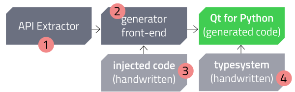
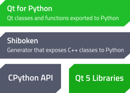

2. Generator Overview¶
In a few words, the Generator is a utility that parses a collection of header and typesystem files, generating other files (code, documentation, etc.) as result.
2.1. Creating new bindings¶

{kind=link}
Creating new bindings
Each module of the generator system has an specific role.
- Provide enough data about the classes and functions.
- Generate valid code, with modifications from typesystems and injected codes.
- Modify the API to expose the objects in a way that fits you target language best.
- Insert customizations where handwritten code is needed.

{kind=link}
Runtime architecture
The newly created binding will run on top of Shiboken which takes care of interfacing Python and the underlying C++ library.
2.2. Handwritten inputs¶
Creating new bindings involves creating two pieces of “code”: the typesystem and the inject code.
| typesystem: | XML files that provides the developer with a tool to customize the way that the generators will see the classes and functions. For example, functions can be renamed, have its signature changed and many other actions. |
|---|---|
| inject code: | allows the developer to insert handwritten code where the generated code is not suitable or needs some customization. |
Copyright (C) 2016 The Qt Company Ltd.